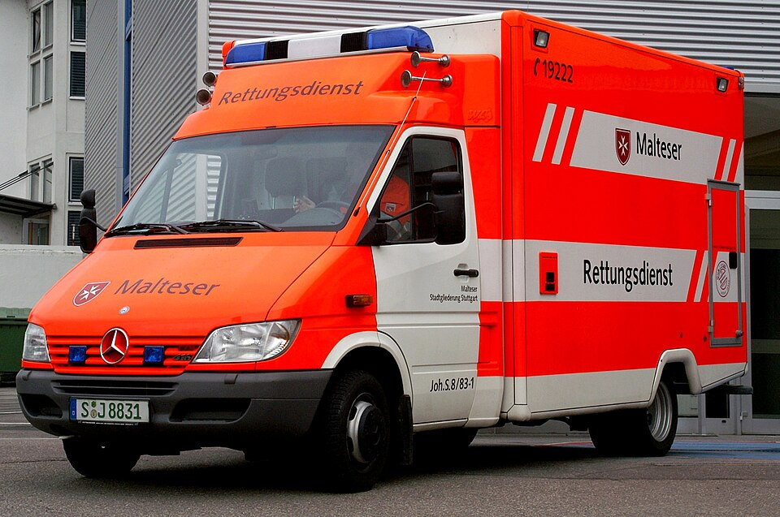
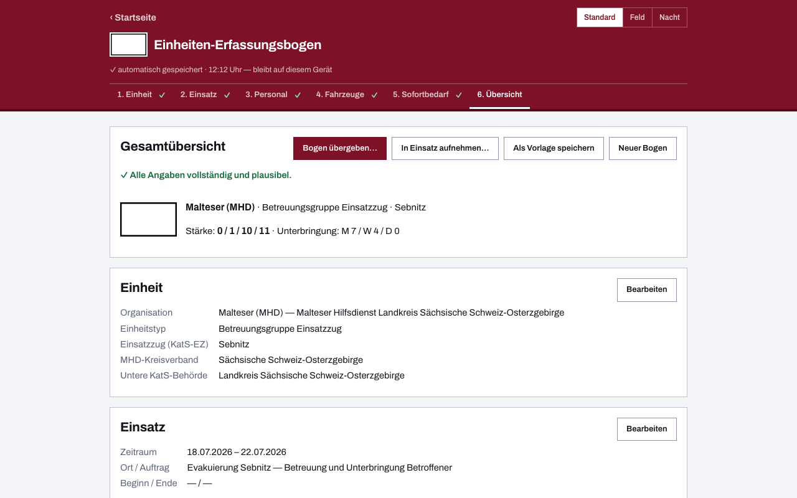

Einheiten-Erfassungsbogen für die Malteser
Wenn der Malteser Hilfsdienst eine Betreuungsstelle aufbaut oder mit der Einsatzeinheit in den Katastrophenschutz ausrückt, will die Führungsstelle eines zuerst wissen: Wer ist da — und was fehlt? Dieser digitale Einheiten-Erfassungsbogen beantwortet beides auf einem Blatt: Stärke, Führungskraft, Fahrzeuge und Sofortbedarf, als kostenloses Online-Tool ohne Anmeldung, gedruckt im gewohnten Papier-Layout und per QR-Code ohne Internet übergeben.

Sanität und Betreuung auf einem Bogen
Der Bogen kennt die Malteser als eigene Organisation — Begriffe, taktische Zeichen und Kennfarbe stellen sich entsprechend um. Erfasst wird, was Einsatzeinheiten ausmacht: die Stärke in der Gliederung Führer / Unterführer / Mannschaft / Gesamt, Fahrzeuge mit Funkrufname und Kennzeichen, dazu der unmittelbare Bedarf an Verpflegung, Unterkunft, Kraftstoff und Material — gerade im Betreuungsdienst oft die wichtigste Zeile der ganzen Meldung.
Die Turnhalle hat kein Dienst-WLAN
Betreuungsstellen entstehen dort, wo Platz ist — nicht dort, wo Netz ist. Die App arbeitet nach dem ersten Aufruf vollständig offline und speichert ausschließlich lokal. Übergeben wird per QR-Code, der den kompletten Bogen enthält: Die Gegenstelle scannt ihn vom Papier oder vom Bildschirm und hat die Meldung im Gerät — ohne Server, ohne Kopplung, ohne Internet. Für die Gegenseite, die viele Einheiten sammelt, gibt es Meldekopf digital.
Vorlagen statt Schreibarbeit
Einen einmal ausgefüllten Bogen speicherst du als Vorlage und musterst ihn bei der nächsten Alarmierung nur noch — gestrichen wird, wer nicht dabei ist. Die Katastrophenschutz-Einheiten, die die Hilfsorganisationen in mehreren Bundesländern stellen, liegen als fertige Landesvorlagen bei, mit Teileinheiten und Funkrufnamen nach Landesregelung.

Häufige Fragen aus dem MHD
Passt das PDF zum gewohnten Papierbogen?
Ja. Das PDF folgt dem bekannten Papier-Layout des Einheiten-Erfassungsbogens, du kannst es unverändert in den Papierlauf geben — welche Felder es enthält, zeigt die Übersicht über Vorlage und Aufbau. Der QR-Code auf der letzten Seite macht dasselbe Blatt maschinenlesbar.
Kann ich einen Bogen für wiederkehrende Dienste wiederverwenden?
Ja — genau dafür gibt es „Meine Vorlagen": Den Bogen der Einsatzeinheit oder des Sanitätsdienstes pflegst du einmal und passt ihn vor jedem Dienst nur an. Deinen laufenden Entwurf sichert die App dabei automatisch auf dem Gerät.
Wo bleiben die eingetragenen Daten?
Auf deinem Gerät — es gibt keinen Server und keine Cloud (Datenschutzerklärung). Die App ist freie Software (EUPL-1.2), der Quellcode liegt offen auf GitHub.